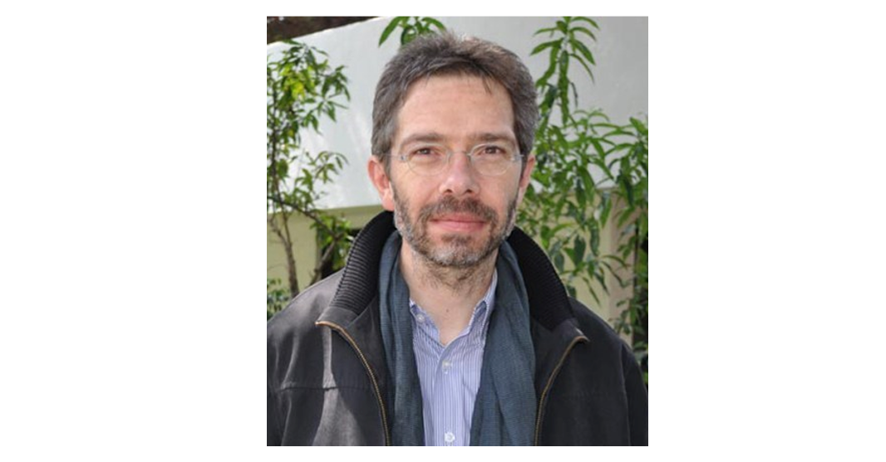

Andreas Schedler：非民主选举和民主选举 | 政观编译
原创 政文观止
政文观止Poliview
微信号 zhengwenguanzhi
功能介绍 从一群年轻人的视角出发，专业、专注、专解海内外比较政治经济研究的前沿佳作。
__发表于
#民主与民主化 34 个
#比较政治学 121 个
文献来源： Schedler, Andreas. 2002. “Elections Without Democracy: The Menu of Manipulation.” Journal of Democracy 13(2): 36–50.
作者简介： Andreas Schedler是拉丁美洲社会科学学院（FLACSO）政治科学系教授，同时也是国际政治科学学会概念与研究方法委员会（www.concepts- methods.org）主席。目前他的研究方向主要为墨西哥的民主化过渡问题。

一、简介
在现代政治讨论的环境下，民主观念与选举行为紧密相连，以至于我们时常忘记了代议制选举的历史同样也是一部威权国家操纵并任意涂抹民意的历史。换句话说，选举既可以是民主治理的手段，同样也可以是威权控制的手段。过去的几十年内我们目睹了全球各国民主化进程的不断加速，同时也见证了很多新型威权主义政体的诞生。它们往往不能被简单地归类为常见的一党专政、军人政权、或是个人主义的威权政体。它们甚至主动拥抱了选举活动甚至是多党竞争，但同时却如此严重并系统性地违反了最低限度的民主规范，以至于没有任何道理可以称之为民主国家。
这类选举专制类政体既不施行真正的民主选举，也不会诉诸于赤裸裸的政治压迫。这样一来，在严格操纵选举过程和结果的同时，这些政府也可以通过做做样子来满足国内外人民的诉求。但是说到底，“民主"和"威权"的区分线到底应该划在哪里？“民主"又意味着什么？有些人认为，“民主"并不是一件非黑即白的事情，而是"更民主"和"更不民主"的区别。另外一些人认为，那些独裁统治的国家并不是比民主国家稍微不那么民主一点，而压根就是不民主。认识到这样的争辩后，本文决定选用"选举威权主义”（electoral authoritarianism）一词来形容这类有选举活动却并不民主的国家。它引入了民主化程度的区分，同时也承认了某个阈值的存在。
二、民主的必要条件
本文首先假设，一个政体必须满足一系列在存在选举之上的基本条件，才可被称为民主。原则上来说，当某个政体违背了这些基本条件中的任意一项，它就不应该再被称为民主政体了。然而，虽然这类概念划分听起来可以让我们较为容易地区分民主政体和威权政体，但在实际分析中也没有哪个国家可以严格满足或不满足这些标准。让一个国家进入民主的舞台总是要付出代价的，而且对于不同国家来说，这个代价永远不会完全平等。选举产生的职务的职权范围到处都是有限的；选举机制总是会有意无意地对一部分国内外的人民区别对待；民主政治也处处受到社会环境和宪法的制约。
对此，本文提出了"民主选择的链条”（The chain of democratic choice）这一概念，其中有七条标准，作者也对如何满足/违反这些标准作出了解释。
其一，民主选择需要含有备选对象（The object of choice），即所有有政治权利的职务必须是通过选举产生的。违反这一标准的行为可能有限制特定职务不受选举制约，或者过分限制特定选举产生的职务的职权。这点从根本上体现了民众是否拥有政治权利。选民在投票时并不是在回答商业调查问卷或是选择美国小姐，而是在选择"最有权力的集体决策者”。
其二，民主选择需要含有选择范围（The range of choice），即公民必须拥有组成、加入、支持特定政党、政策或候选人的自由。违反这一标准的行为可能包含限制反对派使用政治资源，或是故意扰乱反对派的选举等。这些可用的选择范围也不能是当局政府操纵出来的结果，而必须是公民自身在公平和普遍的规则框架下决定。
其三，民主选择需要含有偏好形成（The formation of preferences），即公民必须要有大量获得不同信息的渠道。违反这一标准的行为可能包含限制媒体自由或是反对派政党筹集资金等。受到不正当诱导的民众在做选择时，和那些没有自由选择权的选民一样，都受到了很多制约。
其四，民主选择需要含有选举参与（The agents of choice），即社区成员和公民必须享有相同的政治权利。违反这一标准的行为可能包含根据现实或政治歧视剥夺特定人权的选举权。现代社会的政治选民应该包含全部成年人，或许除了那些曾被判以重罪或是被诊断出精神疾病的人。
其五，民主选择需要含有表达自由（The expression of preferences），即公民必须有自由表达政治倾向的权利。违反这一标准的行为可能包含选民欺压、恐吓、收买选票等。现代选举大多数使用不记名投票的原因，就是为了让选民免受不正当压力的影响，哪怕仅仅是邻居们的不赞成。
其六，民主选择需要含有偏好总和（The aggregation of preferences），即一人一票，并且没有当局参与造假的公平公正票数统计。违反这一标准的行为可能包含票数的重新分配使得某些人群在计票时拥有更大权重等。
其七，民主选择需要含有选择结果（The consequences of choice），即选举产生了公职人员后，这些公职人员必须能够正常履职并且拥有全部合法权力。违反这一标准的行为可能包含不承认选举结果，当选人无法完全施行宪法权力等。如果我们不为获胜者赋予宪法权力，那么这样的选举也是没有意义的。
作者认为，这个链条中的任意一环被某个政体打破时，这个政体就必须被称为不民主，而不仅仅是"不那么民主"。而这个评价标准位于抽象和复杂的中间水平，所以为区分民主选举和专职选举提供了至少两个明显优势。首先，它缩小了程度式和二分式的区别民主政体的概念。在关注细节划分和程度高低的同时，也承认了概念上民主和威权的不同。其次，民主选择的链条这一概念使人们可以将不同的民主/威权政体进行系统性的比较。威权主义统治者能通过打破其中某个链条来参与选举并且控制这个游戏。但是，无论他们选择哪种方式，通过这样七个要素的分析，我们都能识破他们的诡计，并且揭露他们本来的面目。
三、操纵选举的具体方式
第一，为了避免一些来自反对派的难以控制的挑战，独裁者们会将一些拥有决定性权利的政治职务从选举活动中排除出去，并且安插自己的心腹来占据这些职务。上世纪90年代之前中国台湾地区的选举、威权时代的巴西（1964-1985）和当今的摩洛哥（编注：2002年的摩洛哥国王仍拥有较大实质性权力）都是很好的例子。独裁者们也可能将特定职务的公职人员排除在他们本应拥有话语权的决策活动之外。上世纪90代的危地马拉、皮诺切特之后的智利、如今的土耳其都是此类"高筑墙"策略的践行者：在大多重要的决策中，民选官员都不得置喙。
第二，很多时候这些独裁者能够在选举中获胜，并不是因为他们有多聪明，而是因为对手的无能和无力。大多数过渡时期的政府或者反对派都缺乏严格的党内纪律和政治组织。认识到这一点的独裁政治家们会对这种不稳定性加以利用，从内部让它们分崩离析，或是边缘化这些反对派组织。
威权主义统治者们将反对派排除在选举之外的方式有很多。直接暗杀对方领导人物属于最极端的做法，如1991年的多哥选举和1994年的亚美尼亚选举。更常见的则是想方设法让对立党派失去合法性，或是使其领导人失去被选举的资格。作为统治阶级，独裁者们常常可以推行精心设计的选举法律，使得反对派必须满足一系列严苛的要求才能进入选举。独立战争后的墨西哥政坛就将一些地区性、宗教性和独立派政党和政客排除在外。科特迪瓦、肯尼亚和赞比亚都以"国籍法"为理由将当局一些最有力的反对派排除在选举之外。
自从古罗马人提出了"分而治之"（divide et impera）的政策后，独裁者们就一直在尝试从内部将敌人分裂成多个派系，然后逐个击破。比较极端的做法是直接将所有对立党派候选人排除在选举之外，而仅仅允许无党派候选人参选，例如1989年以前的中国台湾；或者直接禁止党派的存在，例如现今的伊朗和乌干达。独裁者们还选择了其他的方法，例如肯尼亚前总统莫伊就曾通过贿赂或是威胁新政党的领导者，直到他们承受不住压力然后解散，或是有人叛变。
第三，为了防止选民获得相关的信息，政府当局可能会努力阻止反对派传播其竞选信息。持不同政见者可能会发现他们无法自由言论、和平集会、自由走动或是使用公共资源来散播竞选广告。许多南亚和撒哈拉沙漠以南的国家都使用了这种限制自由选举的方式，产生了许多并不民主的选举结果。
第四，自从代议制政府被发明以来，政客们就一直绞尽脑汁想办法通过控制选民构成的方式来控制选举结果。种族大屠杀，驱逐难民，刻意提升选民登记的难度和繁琐程度等都是其中的代表策略。此外，当局还有可能通过法律或技术层面的理由操纵选民名册，或是禁止他们前往投票站投票。
第五，主动增加选民身上承受的压力也是控制选举的一种手段。从暴力威胁，到不完善的不记名投票制度（选民可能承受来自异见者的言语暴力），当局有多种手段可以选择来使反对派的支持者们减少投票率，从而增加获胜可能。现在有许多国家的革新派政党，例如墨西哥和菲律宾的政党，正在努力解决资本家收买经济条件较差的选民的问题。
第六，即便先前的过程都能够做到公平公正公开，独裁者仍有可能通过计票造假的方式获得选举胜利。例如，他们可能编写程序入侵投票机，或是制造假身份来增加选票。许多国家的统治者，如海地、秘鲁、南斯拉夫、阿塞拜疆、布基纳法索和津巴布韦的政府当局，都使用过类似方式来进行计票造假。事实上，在上世纪九十年代总共81起选举公正性抗议中，有一半的反对派都称自己在选举计票上被不公平对待过。
第七，整个选举行动到了最后，独裁者们依旧有可能通过不承认选举结果、不让当选人就职等方式来破坏民主环节。1974年革命后的葡萄牙和皮诺切特之后的智利都是很好的例子。
四、总结
在世界上广泛的选举专制的实例中，他们的选举操控策略和合法性都有着巨大区别。显然，有些的压迫性质更强，有些就不那么强。相应地，这些选举产生的寡头们在政权韧性和在位时间上也有着巨大差别。有些人可以在很短的时间内就被推翻，如秘鲁的阿尔伯托·藤森和南斯拉夫的米洛舍维奇。其他的则在更严格的独裁统治和更民主的选举专制中不断摇摆，例如马来西亚、土耳其和巴基斯坦。有些则成功地转型成了民主政治，如塞内加尔和墨西哥。
但是，在什么情况下，这些政权会成功转型？什么情况下会变得更加独裁？在很大程度上，独裁者与民主反对派之间的战略互动决定了选举专制结构的未来走向。然而，作者认为，这种互动的最终仲裁者还是军队和公民。前者有能力通过武力终止它，后者有能力通过选举颠覆它。有时，国际社会也会改变天平的倾向。不幸的是，“9·11”以后的全球议程显然将安全放在了自由之上，意味着选举独裁者可能在有些时候比自由选举更受推崇。
编译：周舒杨 审校：赵德昊 编辑：康张城
【政文观止Poliview】系头条号签约作者